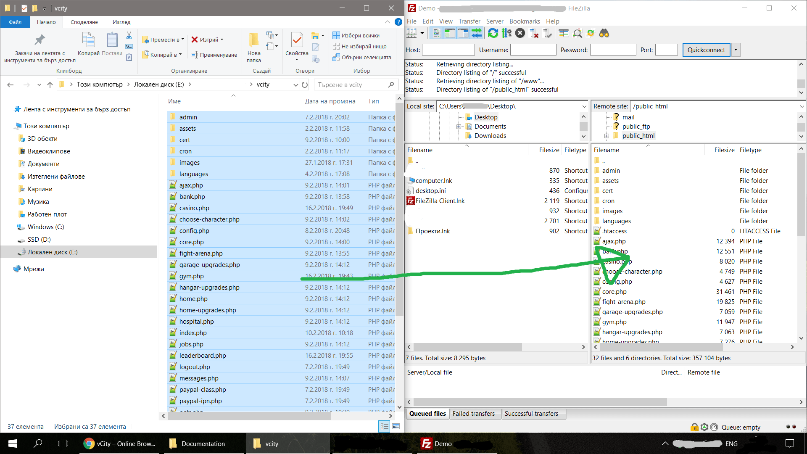
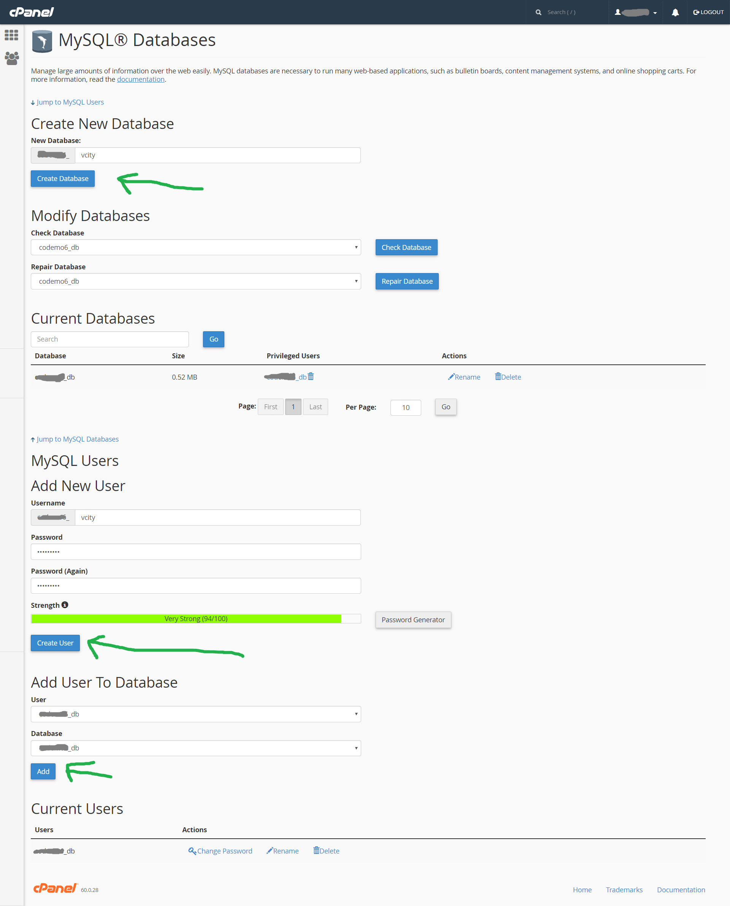
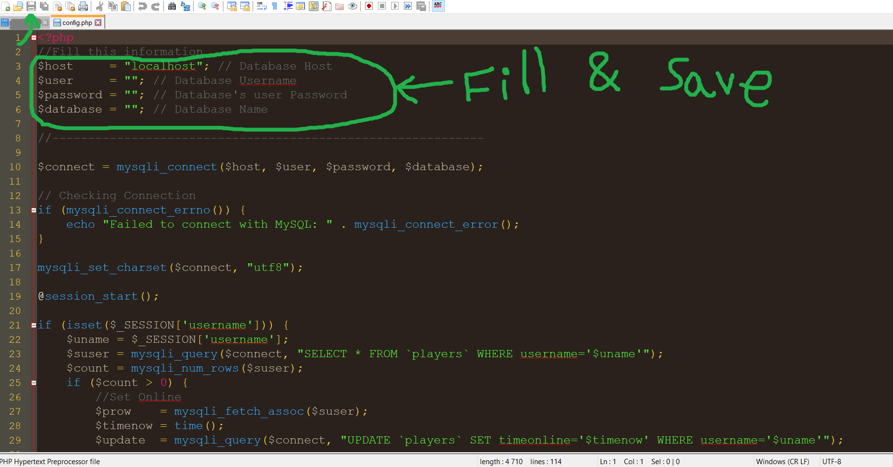
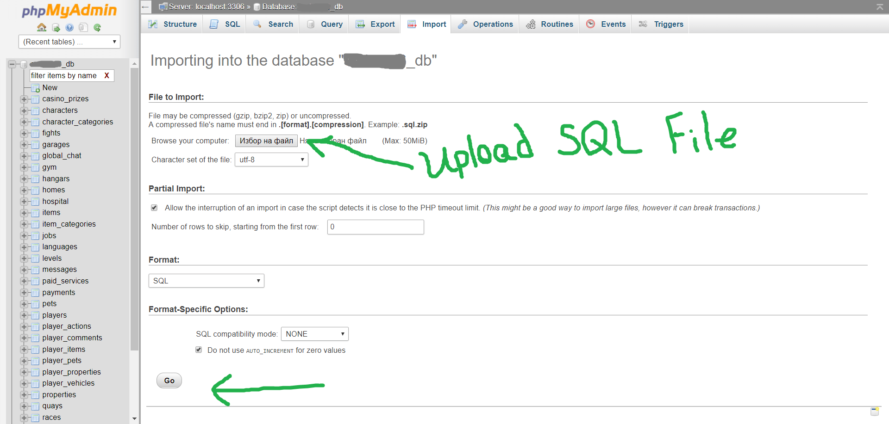

vCity
Online Browser Game
vCity is an online browser game platform that is developed with the latest web technologies. vCity is multifunctional game script that will help you to create your own online browser game to your liking, because it has many options and settings by which to modify and create your desired browser game.
vCity is an online browser game platform that is developed with the latest web technologies. vCity is multifunctional game script that will help you to create your own online browser game to your liking, because it has many options and settings by which to modify and create your desired browser game.
vCity can be easily customized to fit your needs and will help you to create the most respected virtual life game in the world.
Also one of the important features of vCity is that you can earn real money through the integrated paid services in the game – just invest as purchasing it here and create your own game from which you can make real money.
In the game players receive a free home and character to be able to start their virtual life in the game. Players can buy vehicles, properties, items, homes, garages, hangars, quays, pets and many other things to improve their respect. Players have the opportunity to go to work, school, gym, hospital and other places in the game to earn extra money, gold, experience and other bonuses with which to upgrade their character.
vCity is text-based RPG (MMORPG) online web browser game php script.
- Characters
After sign up the player can select a character to start the game with. Every character has specific skills.
- Vehicles
Big variety of Vehicles in different Categories. They can be used in the Street Races.
- Properties
Players can buy properties and then receive income periodically from them.
- Pets
Pets make the home more beautiful and add different skills to the character.
- Shop
Players can buy different Items and every item improves the character and helps him in the Fight Arena.
- Work
Players can go to Work and select the preferred Job to earn money from it.
- Gym
Players can go to Gym and train their character to improve his skills.
- School
Players can go to School and improve their character's intelligence.
- Bank
Players can protect their money in the local Bank.
- Hospital
When player has low health it can go to the Hospital to restore its health.
- Street Races
Players can race against other players to earn additional money, gold and respect.
- Fight Arena
Players can fight against other player to earn addition money, gold and respect.
- Leaderboard
The ranking of all players in the game.
- Casino
Players can invest money in the Casino to multiply their deposit or to earn additional bonuses.
- Resources
Players can purchase additional Money, Gold, VIP Status and other bonuses with real money to improve their presence in the game.
- Home, Garage, Hangar and Quay Upgrades
Homes, Garages, Hangars and Quays can be upgraded to fit more pets, vehicles, planes and boats in them.
- (PM) Message System
Players can send private messages to other player and to communicate via this system.
- Chat System
AJAX Live Chat System that can help all players to communicate via it.
- Levels
Players can level up as doing different activities and buying different things.
- Comments Section
Every player has comments section that can be used by other player to write on his wall.
- Multi-Lingual
The game can be translated in different languages.
- Themes
The game can be redesigned in different themes. Many themes are added by default.
- PayPal Integration
The game is integrated with PayPal, so the game owner can receive real money from the game.
- AJAX Player Statistics
Each player's Stats are refreshed in background mode automatically without refresh of the whole page.
- Powerful Admin Panel
The most modules and settings of the game can be modified from the Admin Panel.
- Easily Customizable Source Code
The script is written in PHP Procedural style and everything can be customized in no time.
- Secure
The script is integrated with special security functions borrowed from Project SECURITY to protect the whole game and all players.
- Dashboard + Stats System
On the Dashboard you can check the Stats of your game.
- Very Optimized
The script is very lightweight and the source code & the graphics are very optimized.
- 98% Responsive
Looks good on the most devices and screen resolutions.
- Easy to setup
The script is very easy to install and every step is described in the Documentation.
- Easy for use
The game is developed to be simple and is very easy to understand & use.
and many more...
- PHP
- MySQLi
- Cron Jobs [Optional]
- Upload the files from the "Source" folder of the script on your host
- Create a MySQL database (Your hosting provider can assist)
- Open and configure the "config.php" file as you fill the empty database variables
- Import the database file (SQL/Database SQL.sql) via PHPMyAdmin into the database (Your hosting provider can assist)
The default login details are: admin & admin [Username & Password]
If you have any problems with vCity send me a message and I will help. Include your license purchase code, a link to your website and temporary FTP details so I can set the system up for you if needed.
(Click on selected image to view it in full size)



